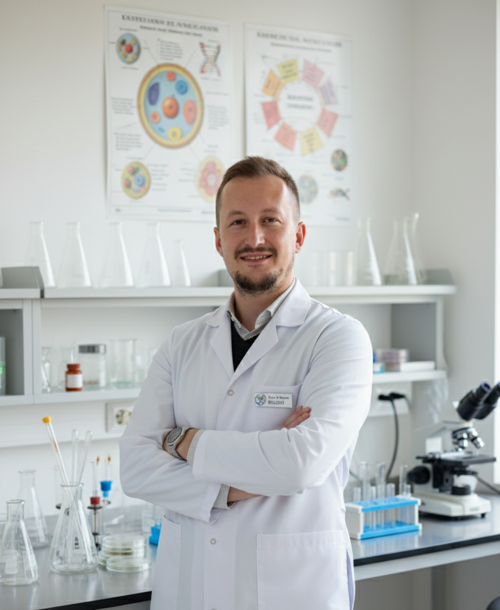

Biology · Education · Ideas
I study life.
I teach curiosity.
I’m Besir Zeneli, a biologist and educator from North Macedonia. I build bridges between scientific knowledge, human growth, and the questions that make learning worth pursuing.

the living world
worth remembering
01 · About
More than a profession,
an ecosystem of interests.
My path began with biology at Hacettepe University and grew through teaching, athletics, writing, and a continuing fascination with how living systems—and people—work.
In the classroom, I care less about memorizing isolated facts and more about helping students learn how to observe, question, connect evidence, and think independently.
Science is the poetry of reality.— Richard Dawkins
02 · Explore
Four doors into
my world.
My CV
Education, experience, projects, and the story behind the work.
Studying Materials
Resources, notes, and learning material gathered for curious minds.
The Pen
Reflections on science, philosophy, education, humanity, and life.
Biology Chat
Explore biology through conversation, questions, and guided curiosity.
03 · Science
Wonder is a
serious way to learn.
A small corner of the site for the feeling behind the facts: awe, evidence, scale, and the poetry of understanding.
The Poetry of Reality
An anthem for science—and a reminder that understanding the universe can be intellectually rigorous and deeply beautiful.
Open on YouTubeI want students to leave the room not only knowing more—but wanting to know more.
04 · Connect
Stay curious.
Stay connected.
For teaching, science, projects, ideas, or simply a good conversation.